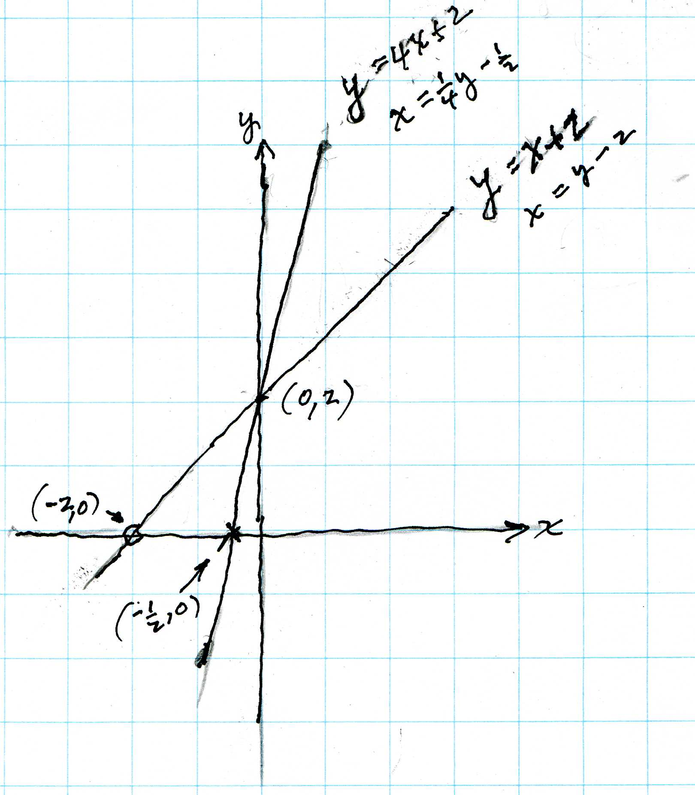

Margaret, an 8th grader, asks a fine question!
Margaret graphed 2 linear equations in 2 variables and found where the lines intersected. Out of nowhere she asked, "Why do we always solve the equations for y, like y = 4x + 2 and y = x + 2 ". Margaret knew the slope of each line was the coefficient of x (4 for the first line and 1 for the second line), and the y-intercept was the adding number ( 2 in each case below).

Don suggested they solve each equation for x. Margaret and Don worked on this and they came up with x = (1/4)y - 1/2 for the first equation and x = y - 2 for the second equations. N.B. these equations are equivalent to the original ones, and the graphs are the same. How are these equations different from the original equations? The slope of the new first one is the coefficient of y, 1/4, or the reciprocal of the original slope of 4). The adding number on the new first one is -1/2, which is the x-intercept!! For y=x+2 the slope is 1 and the adding number is the y-intercept 2. When one solves for x, one get x=y-2, the new slope is still 1, (the reciprocal of 1 is 1), and the adding number is -2, which is the x-intercept!!
Now Don had never seen this before; it was very exciting to learn something new.
Thank you Margaret! A great question!